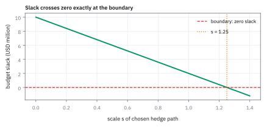

7.4 The MVN Conditional Distribution and the Hedge Ratio
ใช้ผลตอบแทนของ asset หนึ่งอัปเดตค่าเฉลี่ยและสร้าง hedge ของอีก asset
คืนนี้ S&P 500 ปิดลบ 2% คุณถือหุ้นไทย \$100 ล้าน ผลตอบแทนรายวันของสองตลาดมี correlation 0.70 พรุ่งนี้ดัชนี Stock Exchange of Thailand (SET) จะปิดลบด้วยโอกาสเท่าไร และต้องกันเงินเผื่อขาดทุนเพิ่มเท่าไร?
เฉลย: โอกาสปิดลบขยับจาก 48.8% เป็น 94.4% เพราะค่าเฉลี่ยเลื่อนจาก +0.03% เป็น −1.14% ขณะที่ความผันผวนหดจาก 1.00% เหลือ 0.71% VaR 99% หนึ่งวันแย่ลงจาก 2.296 เป็น 2.798 ล้าน ต้องกันเงินเพิ่มราว \$502,000
MVN conditional distribution คือ distribution ของตัวแปรหนึ่งหลังเห็นอีกตัวในแบบจำลอง Multivariate Normal (MVN); ใช้อัปเดตค่าเฉลี่ยและหา hedge ratio ซึ่งเป็นสัดส่วนชดเชยการขยับร่วมของสองตำแหน่ง
ศัพท์ที่ใช้ในหัวข้อนี้
- Multivariate Normal (MVN) distribution
- joint Normal distribution ของ return vector ที่กำหนดด้วยค่าเฉลี่ยและ covariance ใช้ทำ conditional forecast ที่คำนวณได้ปิดรูป
- conditional distribution
- distribution ของตัวแปรเป้าหมายเมื่อรู้ค่าของตัวแปรที่สังเกต ใช้ update forecast หลังเห็น market move
- hedge ratio
- จำนวน exposure ของ hedge asset ต่อหนึ่งหน่วยของ risk asset ที่ลด conditional residual variance ใช้กำหนด hedge size
- conditional mean
- expected value หลังล็อก observed return แล้ว ใช้เป็น updated forecast ของ target asset
- normal distribution
- distribution รูประฆังที่กำหนดด้วยค่าเฉลี่ยและ variance ใช้เป็นรูปของ conditional MVN slice
- expected value
- ค่าเฉลี่ยถ่วงโอกาสใช้เป็น centre ของ conditional forecast
- variance
- ค่ากระจายรอบค่าเฉลี่ยใช้บอก residual risk หลัง hedge
- covariance
- ค่า co-movement ระหว่าง SPX กับ QQQ ใช้คำนวณ hedge ratio
- notional
- มูลค่าเงินของ position ที่ใช้แปลง return hedge ratio เป็น USD P&L
- short position
- position ที่ได้กำไรเมื่อสินทรัพย์อ้างอิงลงและขาดทุนเมื่อขึ้น ใช้หักล้าง market exposure ของ QQQ book ในตัวอย่าง
- basis risk
- ความเสี่ยงที่ target กับ hedge เคลื่อนไม่ตรงกัน แม้ hedge ratio ถูกตามข้อมูลอดีต ใช้เตือนว่า SPX hedge ไม่สามารถลบ QQQ risk ได้หมด
- beta
- slope ของ conditional mean ต่อผลตอบแทนที่เห็นแล้ว ใช้กำหนด hedge ratio
- Value at Risk (VaR)
- ขาดทุนที่จะไม่เกินด้วยความมั่นใจที่กำหนด เช่น 99% ในหนึ่งวัน ใช้บอกว่าต้องกันเงินไว้รองรับความเสี่ยงเท่าไร
- exchange-traded fund (ETF)
- กองทุนที่ซื้อขายในตลาดเหมือนหุ้นและเดินตามดัชนี ใช้ short เพื่อ hedge ความเสี่ยงตลาดของพอร์ตหุ้นทั้งก้อน
- Stock Exchange of Thailand (SET)
- ตลาดหลักทรัพย์แห่งประเทศไทยและดัชนีรวมของมัน ใช้เป็นผลตอบแทนที่ต้องพยากรณ์ในตัวอย่าง ส่วน SET50 คือดัชนีหุ้นใหญ่ 50 ตัว
- law of iterated expectations
- หลักที่ว่าเอา conditional mean ของทุกกรณีมาเฉลี่ยรวมกันแล้วต้องได้ค่าเฉลี่ยเดิม ใช้ตรวจว่าสูตร conditional mean ไม่ได้เลื่อนค่าเฉลี่ยรวมผิด
- SPX
- ดัชนี S&P 500 ของตลาดสหรัฐฯ ใช้เป็น observed market return
- QQQ
- กองทุน Nasdaq-100 ของตลาดสหรัฐฯ ใช้เป็น target return ที่ต้อง hedge
สัญลักษณ์ที่ใช้ในหัวข้อนี้
| สัญลักษณ์ | ความหมาย | หน่วย |
|---|---|---|
| $X,Y$ | SPX และ QQQ daily returns | decimal return/day |
| $\mu_X,\mu_Y$ | unconditional means | decimal return/day |
| $\sigma_X^2,\sigma_Y^2$ | variances | return²/day² |
| $\sigma_{X,Y}$ | covariance ระหว่าง SPX และ QQQ | return²/day² |
| $\beta$ | hedge ratio หรือ conditional slope | unitless |
| $X_1,X_2$ | ในสองตัวอย่างจากตลาด: ตัวที่รู้ค่าแล้ว (S&P หรือ ETF ดัชนี) และตัวที่ต้องพยากรณ์ (SET หรือพอร์ต) | % ต่อวัน |
| $V$ | มูลค่าพอร์ตหุ้นไทย | USD |
| $x$ | observed SPX return | decimal return/day |
ที่มาที่ไป: สูตร hedge ที่โต๊ะใช้จริง มาจากตรงนี้
งาน hedge พื้นฐานที่สุดคือ ถือหุ้นตัวหนึ่งอยู่ แล้วอยากตัดความเสี่ยงตลาดออก ต้องขายดัชนีเท่าไร
คนมักตอบด้วยตัวเลข correlation ซึ่งผิด เพราะ correlation ปรับสเกลไปแล้ว จึงบอกแค่ทิศ ไม่บอกขนาด
ตัวเลขที่ถูกต้องคือค่าที่โผล่ออกมาจากการถามว่า เมื่อรู้ค่าของตัวหนึ่งแล้ว ค่าเฉลี่ยของอีกตัวขยับไปเท่าไร ซึ่งเป็นคำถามที่หัวข้อนี้ตอบ
ของแถมที่มีค่าไม่แพ้กันคือ สูตรเดียวกันบอกด้วยว่าหลัง hedge แล้วเหลือความไม่แน่นอนเท่าไร ซึ่งเป็นตัวเลขที่ต้องรายงานคู่กันเสมอ เพราะ hedge ไม่เคยทำให้ความเสี่ยงเป็นศูนย์
โจทย์ hedge แบบทันเหตุการณ์
ให้ $X$ เป็น SPX return ที่สังเกตได้ และ $Y$ เป็น QQQ return ที่ต้อง forecast ทั้งคู่ใช้ bivariate MVN และ parameter ชุดเดียวกับหัวข้อ 7.1 เมื่อเห็นค่า SPX วันนี้ เราต้องหา conditional mean ของ QQQ และ minimum-variance hedge ratio โดยไม่สลับบทบาท target กับ hedge
ขั้นที่ 1 — อ่านคำตอบออกมาจากกำลังสองสมบูรณ์ของหัวข้อ 7.3
ไม่ต้องพิสูจน์ใหม่ สูตรทั้งสามของหัวข้อนี้อ่านออกมาจากก้อนที่สองของกำลังสองสมบูรณ์ในหัวข้อ 7.3 ได้ตรง ๆ
หัวข้อ 7.3 แยกผิวเป็น ‘ระฆังคว่ำของ $X$’ คูณ ‘ระฆังคว่ำของ $Y$ ที่จุดกลางเลื่อนตาม $z_X$’ ก้อนหลังนั่นแหละคือ distribution ของ $Y$ เมื่อรู้ $X$ (หารด้วย $f_X$ ตามหัวข้อ 6.3 แล้วเหลือแค่มัน)
ความชันคือ $\rho\sigma_Y/\sigma_X$: correlation บอกทิศและความแรงแบบไร้หน่วย แล้วคูณอัตราส่วนความผันผวนเพื่อแปลงเป็น ‘$Y$ ขยับกี่หน่วยต่อ $X$ หนึ่งหน่วย’ นี่คือเหตุผลที่ hedge ratio ไม่ใช่ correlation
ความผันผวนที่เหลือคือ $\sigma_Y^2(1-\rho^2)$: correlation 0.4 ลบความไม่แน่นอนได้แค่ $\rho^2=16\%$ อีก 84% ยังอยู่
ขั้นที่ 2 — conditional mean
คำถามที่ใช้จริงคือ พอเห็น SPX วันนี้แล้ว ควรคาดหวัง QQQ เท่าไร คำตอบไม่ได้มาจากสูตรที่ต้องท่อง มันคือก้อนที่เหลืออยู่แล้วหลังหัวข้อ 7.3 หารเอา marginal ออกไป ทั้งหัวข้อนี้จึงเป็นการอ่านก้อนเดียวกันนั้นให้ละเอียดขึ้น
หัวข้อ 7.3 แยก joint density ออกเป็นสองก้อนไว้แล้ว และก้อนซ้ายคือ $f_X$ พอดี เมื่อหารออกไปจึงเหลือก้อนขวาก้อนเดียว ทั้งหัวข้อนี้คือการอ่านก้อนนั้นให้ละเอียดขึ้น ไม่ได้คำนวณอะไรใหม่เลย
หน้าตาของก้อนที่เหลือคือระฆังในตัวแปร $v$ ที่จุดกลางเลื่อนไปอยู่ที่ $\rho u$ และแคบลงเหลือ $1-\rho^{2}$ แปลงกลับเป็นหน่วยเดิมด้วย $Y=\mu_Y+\sigma_Y v$ แล้วแทนนิยามของ $\rho$ จากหัวข้อ 4.5 $\sigma_Y$ ตัดกัน ส่วน $\sigma_X$ สองตัวรวมเป็น $\sigma_X^{2}$ จึงได้รูปที่ใช้งานจริง
ขั้นที่ 3 — นิยามของ hedge ratio: ตั้งชื่อให้ความชันที่เพิ่งคำนวณได้
ตัวคูณที่โผล่ในสูตรขั้นที่ 2 มีความหมายบนโต๊ะ เราจึงตั้งชื่อให้มัน บรรทัดนี้จึงเป็น นิยาม ของชื่อ ไม่ใช่ผลใหม่ ตัวเลขมันถูกคำนวณไปแล้วในขั้นก่อนหน้า จุดที่ต้องระวังคือมันไม่ใช่ correlation ต่างกันตรงที่ตัวนี้หารด้วย variance ของตัวที่ใช้ hedge จึงมีหน่วยเป็นจำนวนหน่วยที่ต้องขาย ไม่ใช่ตัวเลขระหว่างลบหนึ่งถึงหนึ่ง
$\beta$ คือ hedge ratio: การเปลี่ยน SPX return หนึ่งหน่วยเปลี่ยน conditional mean ของ QQQ ประมาณ $\beta$ หน่วย
ขั้นที่ 4 — conditional variance
การรู้ตัวหนึ่งช่วยลดความไม่แน่นอนของอีกตัวได้เท่าไร ตอบด้วยห้าบรรทัดนี้ และคำตอบมาจากความผันผวนของก้อนที่เหลือในขั้นที่ 2 ไม่ได้มาจากสูตรใหม่
ความผันผวนของก้อนที่เหลือจากขั้นที่ 2 คือ $1-\rho^{2}$ แปลงกลับเป็นหน่วยเดิมโดยตัวคูณ $\sigma_Y$ ถูกยกกำลังสอง เพราะ variance วัดระยะยกกำลังสอง ซึ่งเป็นกฎเดียวกับหัวข้อ 6.5 แล้วแทนนิยามของ $\rho$ ลงไป $\sigma_Y^{2}$ ตัดกัน เหลือรูปที่ใช้งานได้
จุดที่ควรสังเกตที่สุดคือไม่มี $x$ อยู่ในคำตอบเลย แปลว่าความไม่แน่นอนที่เหลือเท่าเดิม ไม่ว่าวันนี้ SPX จะออกมาเท่าไร นี่เป็นสมบัติเฉพาะของระฆัง ไม่ใช่ของทุก distribution
อ่านผลลัพธ์ให้ออก — ทำไมความไม่แน่นอนลดลงเสมอ และลดเท่าไรรู้ล่วงหน้า
ก้อน $\Sigma_{21}\Sigma_{11}^{-1}\Sigma_{12}$ นี้มีชื่อทางพีชคณิตว่า Schur complement และเป็นตัวเดียวกับที่โผล่มาในการกลับ matrix แบบแบ่งบล็อก ความหมายทางการเงินของมันคือ ส่วนของความเสี่ยงที่อธิบายได้ด้วยสิ่งที่เรารู้แล้ว จึง hedge ทิ้งได้
ตรวจเองใน 10 วินาที ใส่ correlation เป็นศูนย์ ก้อนที่ลบต้องหายไปทั้งก้อน และความไม่แน่นอนต้องเท่าเดิมเป๊ะ ถ้าไม่เท่า แปลว่าแทนค่าผิด
ก้อนที่ถูกลบออกไปเขียนใหม่ได้เป็นของบางอย่างคูณกับทรานสโพสของตัวมันเอง ของแบบนั้นไม่มีทางติดลบ เหมือนกำลังสองที่ไม่มีทางน้อยกว่าศูนย์
แปลว่าสิ่งที่เหลือหลังลบ ไม่มีวันมากกว่าของเดิม การรู้ข้อมูลเพิ่มจึงลดความไม่แน่นอนเสมอ หรืออย่างแย่ที่สุดก็เท่าเดิม ตอนที่สองกลุ่มไม่เกี่ยวกันเลย
จุดที่คนมองข้ามอยู่ตรงนี้ ในสูตรของความไม่แน่นอนที่เหลือ ไม่มี $x_1$ โผล่มาเลยสักตัว มีแต่ตัวโครงสร้างความสัมพันธ์ ค่าที่สังเกตได้จริงไม่มีผลต่อขนาดของความไม่แน่นอน มันมีผลแค่ว่าค่าเฉลี่ยจะเลื่อนไปไหน
ผลในทางปฏิบัติคือ desk คำนวณความเสี่ยงที่จะเหลือหลัง hedge ได้ตั้งแต่เมื่อวาน โดยไม่ต้องรอดูว่าตลาดจะเปิดมาที่ราคาไหน กรณีสองตัวแปรยิ่งอ่านง่าย correlation 0.6 เหลือความผันผวน 64% ของเดิม ตัดออกได้ 36%
ขั้นที่ 5 — hedge P&L
แปลงทั้งหมดเป็นผลลัพธ์ที่วัดได้ คือหลัง hedge แล้วเหลือความเสี่ยงเท่าไร คำตอบตรงกับความไม่แน่นอนที่เหลือในขั้นที่ 4 พอดี ซึ่งไม่ใช่เรื่องบังเอิญ มันคือความหมายของคำว่า hedge ด้วยอัตราที่ดีที่สุด
คราวนี้เดินอีกทางเพื่อตรวจ: กางความเสี่ยงของพอร์ตที่ถือ $Y$ และขาย $X$ ตามอัตรา $\beta$ น้ำหนักของ $X$ เป็นลบเพราะเป็นการขาย พจน์ไขว้จึงติดลบ รูปนี้มาจากหัวข้อ 6.5 ไม่ใช่ของใหม่
สามบรรทัดกลางแทนค่า $\beta$ ลงไปทีละพจน์ แล้วตัดทอนกำลังของ $\sigma_X$ สองพจน์ที่หน้าตาเหมือนกันรวมกัน หนึ่งบวกหนึ่งลบสอง เหลือลบหนึ่ง ผลตรงกับ conditional variance ในขั้นที่ 4 ทุกตัวอักษร ทั้งที่ทางหนึ่งมาจากการหาร density อีกทางมาจากการกางกำลังสอง
ขั้นที่ 6 — ทำไม 0.60 คือขนาด hedge ที่ดีที่สุด: ลองสามขนาดแล้วดูรูปตัว U
hedge ratio มาจากสองที่: จาก conditional distribution และจากการถามว่า “ขนาดไหนทำให้ความเสี่ยงที่เหลือน้อยที่สุด” ลองทางที่สองด้วยมือ
hedge น้อยไป (0.3) เหลือความเสี่ยงตลาดค้าง hedge มากไป (0.9) สร้างความเสี่ยงใหม่จากตัว SPY เอง ทั้งสองให้ 0.000792 เท่ากันพอดี จุดต่ำสุดอยู่ตรงกลางที่ 0.6 นี่คือเส้น U ในรูป 7.4c
สามบรรทัดสุดท้ายหาจุดต่ำสุดด้วยการหา derivative ตาม $b$ (หัวข้อ 12.2 จะทำเรื่องนี้เป็นระบบ) ได้สูตรเดิมของ hedge ratio จากอีกทางหนึ่ง สองเส้นทางให้ 0.60 เท่ากัน
ขั้นที่ 7 — แทนค่าจาก joint model
รู้ $X$ แล้วสองอย่างเปลี่ยน: จุดกลางของ $Y$ ขยับตาม $\beta$ และความไม่แน่นอนที่เหลือหดลง ขั้นนี้คำนวณทั้งสองอย่าง
$X$ ต่ำกว่าค่าเฉลี่ยอยู่ 0.0304 และ $Y$ ตามไปด้วยอัตรา 0.60 จุดกลางของ $Y$ จึงตกลงมาที่ $-1.794\%$
ความไม่แน่นอนเดิมของ $Y$ คือ $\sqrt{0.0009}=3\%$ พอรู้ $X$ แล้วเหลือ 2.75% การรู้ $X$ จึงช่วยได้จริง แต่ไม่ได้ช่วยมาก เพราะสองตัวนี้เกี่ยวกันไม่แน่นนัก
ขั้นที่ 8 — โจทย์เปิดเรื่อง: S&P ปิดลบ 2% แล้วค่าเฉลี่ยกับความผันผวนของ SET เป็นเท่าไร
ของที่โจทย์ให้: S&P คืนเดียว X₁ ~ N(0.00%, 1.2%²) SET พรุ่งนี้ X₂ ~ N(0.03%, 1.0%²) correlation 0.70 และสองตัวเป็น bivariate normal ประกอบ Σ จาก σ สองตัวกับ ρ แล้วใช้สูตรของขั้นที่ 2 และ 4
0.84 มาจาก Cov = ρσ₁σ₂ ตัว ρ ไม่มีหน่วย σ₁σ₂ ใส่หน่วยกลับเข้ามา รายงานความเสี่ยงชอบให้ ρ เพราะอ่านง่าย แต่สูตรทุกสูตรกิน covariance ตัวหารต้องเป็น variance ของตัวที่รู้ค่าแล้ว สลับเมื่อไรได้ตัวเลขคนละตัว
ข่าวอธิบาย variance ของ SET ได้ ρ² = 49% ตัวเดียวกับ R² ของ regression แต่ระวังหน่วย variance หด 49% ขณะที่ σ หดแค่ 28.6% เพราะ σ คือรากของ variance ตัวเลขที่บอกว่าลดความเสี่ยงได้ครึ่งหนึ่งมักอ่านหน่วย variance มาพูดเป็นหน่วย σ
ขั้นที่ 9 — สองการตรวจที่บอกว่าไม่ได้คิดผิด
การตรวจแรกดูว่าความผันผวนใหม่ขึ้นกับขนาดของข่าวไหม การตรวจที่สองเฉลี่ยค่าพยากรณ์ทุกแบบของข่าว แล้วต้องได้ค่าเฉลี่ยเดิมกลับมา
สูตรความผันผวนไม่มี x₁ อยู่เลย S&P ลง 0.5% หรือ 5% σ ของ SET ก็ยังเป็น 0.71% ข่าวเลื่อนจุดกลางอย่างเดียว ไม่บีบความผันผวนตามขนาดข่าว
การตรวจที่สองคือ law of iterated expectations ได้ 0.03% ตรงกับค่าเฉลี่ยเดิม มันจับความผิดพลาดที่พบบ่อยที่สุดคือลืมลบ μ₁ ที่นี่ μ₁ = 0 พอดีจึงมองไม่เห็นความต่าง แต่ในตลาดที่ μ₁ ไม่ใช่ศูนย์จะพังทันที
ขั้นที่ 10 — แปลงเป็นโอกาสและ VaR: ก่อนกับหลังรู้ข่าว
ใช้ค่าจาก Φ ในตารางระฆังคว่ำ และค่า z ที่ทิ้งพื้นที่ซ้าย 1% คือ −2.326 พอร์ตมีมูลค่า \$100 ล้าน
ก่อนได้ข่าว โอกาส SET ปิดลบคือ 48.8% แทบเป็นการโยนเหรียญ พอเสียบข่าวเข้าไปตัวเดียวกลายเป็น 94.4% ทั้งที่ σ ยังเหลือ 0.71% เพราะค่าเฉลี่ยเลื่อนลง 1.17 จุดขณะที่ไม้บรรทัดยาวแค่ 0.71 จุด ศูนย์จึงอยู่ห่างจากค่าเฉลี่ย 1.59σ
VaR แย่ลงทั้งที่ σ หดลง เพราะ VaR มีสองส่วนคือค่าเฉลี่ยกับความผันผวน ข่าวช่วยเรื่องความผันผวน หางสั้นลง 0.665 จุด แต่ทำร้ายเรื่องค่าเฉลี่ย เลื่อนลง 1.167 จุด สุทธิแย่ลง 0.502 จุด ใครรายงาน VaR ด้วย σ ในอดีตอย่างเดียวคืนนี้จะกันเงินขาดไปราวครึ่งล้าน
ขั้นที่ 11 — hedge พอร์ตหุ้นไทยด้วย ETF ดัชนี SET50: β = 1.0592 จากสามทาง
ของที่โจทย์ให้: ETF σ₁ = 1.20% μ₁ = 0.03% พอร์ต σ₂ = 1.55% μ₂ = 0.05% ต่อวัน ρ = 0.82 และพอร์ตมูลค่า \$100 ล้าน ทำงานในหน่วยทศนิยมแล้วเก็บเลขไว้ 8 หลักจนจบ
กรณี 1 × 1 การกลับ matrix คือการหารธรรมดา β เป็นตัวเดียวกับ Cov หารด้วย Var ของตัวที่รู้ค่าในวิชา regression ทั้งสามทางได้ 1.0592 เท่ากัน β มากกว่า 1 เพราะพอร์ตผันผวนกว่าดัชนี จึงต้อง short ETF มากกว่ามูลค่าพอร์ต
ดูหน่วยจะไม่สลับตัวหาร: β ต้องเป็นหน่วยของพอร์ตต่อหนึ่งหน่วยของ ETF covariance มีหน่วยพอร์ตคูณ ETF จึงต้องเอา variance ของ ETF เป็นตัวหาร ถ้าใช้ variance ของพอร์ตเป็นตัวหารจะได้ 0.635 ซึ่งคือ β ของ regression กลับทาง short น้อยไป 40%
ขั้นที่ 12 — ETF ร่วง 3%: พอร์ตคาดว่าเป็นเท่าไร และช่วง 95%
แทน x₁ = −3.00% ในสูตร conditional mean ส่วนที่เกินความคาดหมายต้องลบค่าเฉลี่ย μ₁ ก่อน
ค่าเฉลี่ยใหม่คือค่าเฉลี่ยเดิมบวก β คูณส่วนที่เซอร์ไพรส์ ถ้า ETF ออกมาตรงกับที่คาด วงเล็บเป็นศูนย์ ไม่ต้องอัปเดตอะไร ข้อมูลมีค่าเมื่อมันเซอร์ไพรส์เท่านั้น โครงเดียวกันนี้กลับมาในชื่อ Kalman filter gain และ Bayesian update
ถ้าลืมลบ μ₁ ได้ −3.13% ผิดไป 3 basis point ที่นี่เล็กเพราะ μ₁ เล็ก แต่ในสินทรัพย์ที่มีผลตอบแทนเฉลี่ยรายวันสูงชัด การลืมลบทำให้ hedge เอียงสะสมทุกวัน ช่วง ±1.74% คือ basis risk ต่อให้ทายทิศถูก พอร์ตยังจบได้ตั้งแต่ −1.4% ถึง −4.9% บนพอร์ต 100 ล้านคือช่วงกว้างราว 3.5 ล้านที่ hedge ไม่ช่วย
ขั้นที่ 13 — ลดความเสี่ยงได้ 42.8% หรือ 67.2% และ VaR ก่อนกับหลัง hedge
วัดความเสี่ยงที่เหลือสองหน่วย แล้วแปลงเป็น VaR 99% หนึ่งวัน ค่าเฉลี่ยหลัง hedge คือ μ₂ − βμ₁
variance เป็น σ ยกสอง เปอร์เซ็นต์จึงไม่ส่งผ่านราก √0.3276 = 0.5724 ไม่ใช่ 0.3276 ฝ่ายขายชอบ 67.2% เพราะฟังดูดีกว่า ฝ่ายความเสี่ยงต้องใช้ 42.8% เพราะ VaR และ limit คิดในหน่วย σ รายงานทั้งสองตัวพร้อมบอกหน่วย
กฎที่ตามมา: จะตัดความเสี่ยงในหน่วย σ ลงครึ่งหนึ่งต้องมี √(1 − ρ²) = 0.5 คือ ρ สูงถึง 0.866 hedge ที่ดูดีจึงมักลดความเสี่ยงได้น้อยกว่าที่ใจคิด
คำตอบ — สูตรเงื่อนไขของ MVN คือใบสั่งงานสองบรรทัด
คำถาม: SET หลัง S&P ลง 2% และ hedge พอร์ตด้วย ETF ดัชนี SET50 ได้ตัวเลขอะไรบ้าง?
ของที่มี: ขั้นที่ 8 ถึง 13
1. SET พรุ่งนี้ ~ N(−1.14%, 0.71%²) variance หด 49% σ หด 28.6% โอกาสปิดลบ 48.8% → 94.4% VaR 99% แย่ลง 502,000
2. β = 1.0592 short ETF 105,920,000 ถ้า ETF −3% พอร์ตคาดว่า −3.16% ช่วง 95% [−4.90%, −1.42%]
3 ความเสี่ยงที่เหลือ 0.887% ต่อวัน ลด 42.8% ในหน่วย σ หรือ 67.2% ในหน่วย variance
เฉลย: บรรทัดแรกของสูตรบอกว่าต้อง short เท่าไร บรรทัดที่สองบอกว่ายังต้องกันทุนไว้เท่าไร เดสก์ที่รายงานแค่บรรทัดแรกแล้วบอกว่าพอร์ต hedge แล้ว กำลังซ่อนบรรทัดที่สองไว้
เช็ก 10 วินาที: 0.84/1.44 = 0.5833, √0.51 = 0.714, 0.82 × 1.55/1.20 = 1.0592, 1.55 × √0.3276 = 0.887
งานจริง: ρ คือราคาของข้อมูล ถ้า ρ = 0.20 การเลื่อนเหลือ 0.167 × (−2) = −0.33 จุดและ σ หดแค่ 2% ข่าวเดียวกันแทบไร้ค่า β และ ρ ประมาณจากอดีตและเคลื่อนที่ ρ ที่วัดจากปีที่แล้วมักสูงเกินจริงในวันวิกฤต และสูตรนี้ให้ hedge ที่ variance ต่ำสุด ซึ่งไม่ใช่ hedge ที่ขาดทุนสูงสุดต่ำสุดเมื่อหางไม่เป็นระฆังคว่ำ
กับดัก: สามจุดที่พลาดบ่อย สลับตัวหารได้ 0.635 แทน 1.059 ลืมลบ μ₁ และปัด Σ₂₁ เร็วเกินไป ถ้าปัดเป็น 0.00015 จะได้ β = 1.0417 short ขาดไปราว 1.75 ล้าน และ σ ใหม่ที่ไม่ขึ้นกับขนาดข่าวเป็นสมบัติของ bivariate normal เท่านั้น ตลาดจริงมี volatility clustering วันที่สหรัฐลง 5% SET พรุ่งนี้จะแกว่งกว้างกว่า 0.71% แน่นอน
โค้ดตรวจสองตัวอย่างจากตลาด
import numpy as np
from scipy.stats import norm
m=0.03+0.84/1.44*(-2.0); s=np.sqrt(1.00-0.84**2/1.44)
assert abs(m+1.136667)<1e-6 and abs(s-0.714143)<1e-6
assert abs(norm.cdf(0,m,s)-0.9443)<1e-4 and abs(norm.cdf(-0.03)-0.4880)<1e-4
assert abs((m-2.326*s)-(-2.7978))<1e-3
S=np.array([[0.012**2,0.82*0.012*0.0155],[0.82*0.012*0.0155,0.0155**2]])
b=S[1,0]/S[0,0]; r=np.sqrt(S[1,1]-S[1,0]**2/S[0,0])
assert abs(b-1.0591667)<1e-7 and abs(r-0.0088716)<1e-7
assert abs(0.0005+b*(-0.03-0.0003)-(-0.0315927))<1e-7โค้ดนี้ตรวจค่าเฉลี่ย −1.1367% ความผันผวน 0.7141% โอกาสปิดลบ 94.4% VaR หลังข่าว −2.798% และในตัวอย่าง hedge ตรวจ β 1.0592 ความเสี่ยงที่เหลือ 0.887% กับค่าเฉลี่ย −3.159% เมื่อ ETF ร่วง 3%
แล้วเอาไปใช้ทำอะไรได้จริงบ้าง
การอัปเดตความคาดหวังของตัวหนึ่งเมื่อเห็นอีกตัว คือสูตร hedge ที่ใช้จริงบนโต๊ะ
ใช้คำนวณว่าต้องขายดัชนีเท่าไรเพื่อกลบความเสี่ยงตลาดของหุ้นที่ถืออยู่
ใช้บอกว่าหลัง hedge แล้วยังเหลือความเสี่ยงเท่าไร ซึ่งเป็นตัวเลขที่ต้องรายงานคู่กันเสมอ
ใช้ตัดสินว่าการ hedge คุ้มหรือไม่ ถ้าลดความเสี่ยงได้น้อยแต่มีต้นทุนซื้อขายสูง ก็ไม่ควรทำ
Figure 7.4a — เส้นค่าเฉลี่ยหลังรู้ข่าว พาดผ่านเส้นระดับร่วม

เส้น conditional mean ใช้ slope 0.60 จาก covariance matrix จริง; เมื่อ SPX เท่ากับ -3.00% จุด forecast ของ QQQ อยู่ที่ -1.794%
Figure 7.4b — variance ก่อนรู้ข่าว เทียบกับหลังรู้ข่าว

หลังเห็น SPX เท่ากับ -3.00% conditional QQQ mean เลื่อนไป -1.794% และ daily volatility ลดจาก 3.00% เหลือ 2.75%; ความเสี่ยงแคบลงแต่ไม่หายไป
Figure 7.4c — hedge ratio กับความเสี่ยงที่เหลือ

เส้น U แสดง residual daily volatility ของ $Y-bX$ ซึ่งต่ำสุดที่ $b=0.60$; hedge น้อยหรือมากกว่านี้เพิ่มความเสี่ยงทั้งคู่
Figure 7.4d — จากสัญญาณที่เห็น สู่การสั่ง hedge

ทุก observed SPX return เลื่อน conditional QQQ mean ตาม slope 0.60 ขณะที่แถบหนึ่ง conditional standard deviation กว้างคงที่ประมาณ 2.75% ภายใต้ MVN
Worked Example — โจทย์จิ๋วที่คำนวณได้
โจทย์ให้อะไรมาบ้าง: SPX surprise เท่ากับ -3.04 จุด, hedge ratio 0.60 และ QQQ book มี exposure \$10 ล้าน.
คำตอบ: conditional QQQ mean เลื่อนเป็น -1.794% และ minimum-variance hedge เริ่มที่ short SPX \$6 ล้าน.
ตรวจเองใน 10 วินาที: กด 0.60*10 ต้องได้ \$6 ล้าน; ทิศ hedge ต้องเป็น short เพื่อหัก market exposure
แปลว่าอะไรบนโต๊ะ: hedge ratio แปลง shock ของ SPX เป็นขนาด hedge ของ QQQ กับดักคือใช้ ratio เดิมเมื่อ covariance regime เปลี่ยน.
กับดัก: ใช้ beta จาก regression โดยไม่เช็ก covariance model
hedge ratio นี้มาจาก covariance และ target/hedge order ต้องตรงกัน สลับ numerator หรือใช้ covariance จากคนละ window จะให้ hedge ที่ดูเหมือนมีเหตุผลแต่เพิ่ม residual risk
ข้อจำกัด: วิธีนี้สมมติอะไร และของจริงเป็นอย่างไร
| เรื่อง | วิธีนี้สมมติว่า | ของจริงเป็นอย่างไร | ผลที่ตามมาเวลาใช้งาน |
|---|---|---|---|
| ความเป็นเส้นตรง | ความสัมพันธ์เป็นเส้นตรง | ในวันที่ตลาดเหวี่ยงแรงมันไม่เป็นเส้นตรง | hedge ที่คำนวณไว้ทำงานได้แย่ที่สุดในวันที่ต้องการมันมากที่สุด |
| ความคงที่ | อัตรา hedge คงที่ | มันเปลี่ยนตามภาวะตลาด | ต้องคำนวณใหม่เป็นระยะ และการคำนวณใหม่บ่อยก็มีต้นทุน |
| ข้อมูลที่ใช้ประมาณ | ประมาณอัตรา hedge ได้แม่น | ค่าที่ได้เหวี่ยงตามช่วงข้อมูลที่เลือก | hedge ที่ใช้ค่าผิดอาจเพิ่มความเสี่ยงแทนที่จะลด |
แถวแรกคือเหตุผลที่ต้องมีการทดสอบ hedge ในภาวะวิกฤติแยกต่างหาก
สรุปที่ใช้ได้จริง
- MVN conditional mean เป็นเส้นตรงใน observed return
- hedge ratio คือ $\sigma_{X,Y}/\sigma_X^2$
- conditional variance คือ residual risk หลังใช้ hedge
- hedge ratio ต้อง map ต่อ notional USD เพื่อคุม P&L
- S&P ลง 2% ทำให้โอกาส SET ปิดลบขึ้นจาก 48.8% เป็น 94.4% และ hedge ด้วย correlation 0.866 ลดความผันผวนได้ครึ่งเดียว ไม่ใช่เกือบหมด